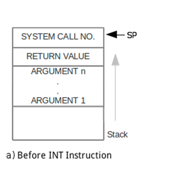
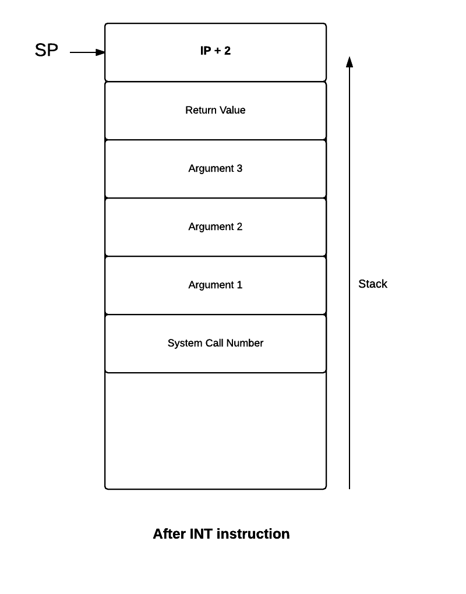

Using the Roadmap
This roadmap is divided into stages. Each stage is to be done in sequential order. You will build eXpOS incrementally. Links are provided throughout the document for further reference. There are two kinds of links. The contents of the important links must be read immediately before proceeding with the roadmap. The informative links may be clicked for more information about a particular concept. However this information may not be necessary at that point and you may proceed with the roadmap without visiting these links.
- Download the complete eXpOS package from here.
- Copy the tar file to your home directory.
cp expos.tar.gz $HOME/
cd $HOME - Extract the contents using the command.
tar -xvf expos.tar.gz
Now you will have a directory myexpos in your home drectory, with all components required for building your own eXpOS. - Install libreadline-dev package
sudo apt-get install libreadline-dev
- Make sure all the prerequisites which include gcc, flex/lex and bison/yacc are installed.
In Ubuntu/Debian systems, use apt to install flex and bison.
sudo apt-get install flex bison
- Change directory to myexpos directory.
cd $HOME/myexpos
- Make to build all the components.
make
After the setting up of the system is done correctly the following directories will be created.

Assignment : Read and understand the Filesystem (eXpFS) Specification and XFS-Interface Specification (interface between the UNIX System and eXpFS)
The eXperimental Filesystem (eXpFS) is a simulated filesystem. A UNIX file named "disk.xfs" simulates the hard disk of the XSM machine. Building eXpOS begins with understanding the underlying filesystem (eXpFS) and its interface (xfs-interface) to the host (UNIX) environment. The xfs-interface is used for transferring files between your linux system and the xsm disk.

In this stage, you will create a text file and load it to the XFS disk using xfs-interface.
-
Run the XFS Interface
This will take you to the xfs-interface prompt.
cd $HOME/myexpos/xfs-interface ./xfs-interface
-
Start by formatting the disk to the eXpOS file system format in the XFS interface using fdisk command.
The fdisk command converts the raw disk into the filesystem format recognised by the eXpOS operating system. It initialises the disk data structures such as disk free list, inode table, user table and root file .
Type the following commands in the xfs-interface prompt.# fdisk # exit
You will be back in the UNIX shell and a file named disk.xfs is created in the location $HOME/myexpos/xfs-interface/. This UNIX file simulates the hard disk of the XSM machine. The disk is formatted to eXperimental File System (eXpFS) (see eXpFS Specification).
The XSM machine's disk is a sequence of 512 blocks, each block capable of holding 512 words (see Disk Organization). The second block of the formatted disk contains a disk free list which is explained below. -
The Disk Free List in XFS is a data structure which keeps track of used and unused blocks in the disk. An unused block is indicated by 0 and a used block is indicated by 1. Check the contents of the Disk Free List after formatting the disk. Use the df command to view the Disk Free List (stored in disk block number 2). The output will be as follows:
The first 69 blocks (blocks 0 to 68) are reserved for Disk Structures, OS routines, Shell Code, Idle Code and INIT program (see Disk Organization). Hence it is marked as 1 (used) and the remaining entries for blocks 69 to 511 are 0 (unused).
0 - 1 1 - 1 2 - 1 3 - 1 4 - 1 5 - 1 6 - 1 7 - 1 8 - 1 9 - 1 10 - 1 11 - 1 12 - 1 13 - 1 14 - 1 15 - 1 16 - 1 17 - 1 18 - 1 19 - 1 20 - 1 21 - 1 22 - 1 23 - 1 24 - 1 25 - 1 . . No of Free Blocks = 443 Total No of Blocks = 512
- Create a file in your UNIX machine with sample data. A sample data file is given below:
Save the file as $HOME/myexpos/sample.dat
There is a place where the sidewalk ends And before the street begins, And there the grass grows soft and white, And there the sun burns crimson bright, And there the moon-bird rests from his flight To cool in the peppermint wind.
- Load this data file ($HOME/myexpos/sample.dat) to the XFS disk from your UNIX machine. This can be done by the following commands:
This will take you to the xfs-interface prompt. Type the following commands.
cd $HOME/myexpos/xfs-interface ./xfs-interface
This will load the file to the XFS disk and the following updations happen in disk data structures :# load --data $HOME/myexpos/sample.dat
- A disk block will be allocated for the file (as sample.dat contains less than 512 words) and corresponding to this allocated block (here block 69 - this is because the 1st free block is allocated by the allocator), an entry will be marked as 1 (used) in the Disk Free List.
- An entry in the Inode Table will be created for this file. Inode Table contains information such as the file type, file name, file size, userid, permission and the block numbers of the data blocks of the file. The owner of data files loaded through xfs-interface is the root. Userid is the index of the user entry in the User Table. The userid of root is 1 and hence the userid field in the inode table is set to 1 for all data files loaded through the xfs interface. The permission is set to open(1). Note that any file in eXpFS file system is permitted to have a maximum of four data blocks.
- An entry for this file will be made in the Root File also.
Before proceeding further you must be clear about eXpFS (eXperimental File System). In the following steps we will see the above mentioned updations. - Find out the block numbers of the Data Blocks corresponding to the loaded file. Use the copy command to copy the Inode Table(Inode Table is stored in disk blocks 3 and 4) to a UNIX file (say $HOME/myexpos/inode_table.txt).
# copy 3 4 $HOME/myexpos/inode_table.txt # exit
Note:The Inode table occupies only the first 960 words (60 entries, each of size 16 words) in the disk blocks 3 and 4. User table occupies the next 32 words (16 entries, each of size 2 words) and the last 32 words are reserved for future use. (You will learn about User Table later on).
Now check the Inode table entry for the file sample.dat in the UNIX file inode_table.txt and find the block numbers of its data blocks. The contents of the file inode_table.txt will be as follows:
1 root 512 -1 -1 -1 -1 -1 5 -1 -1 -1 -1 -1 -1 -1 2 sample.dat 512 -1 -1 -1 -1 -1 69 -1 -1 -1 -1 -1 -1 -1 -1 . . .Note:Instead of using the copy command you can use dump command provided by the XFS interface to directly copy the disk data structures (inode table, root file) to the UNIX machine as shown below.# dump --inodetable
This will write the contents of the inodetable into the file $HOME/myxos/xfs-interface/inodetable.txt - Now check the contents of the disk free list and verify that the entry for the 69th block is marked as used. This corresponds to the Data Block 1 of sample.dat.
-
Copy the data blocks from the XFS disk and display it as a UNIX file $HOME/myexpos/data.txt.
You will get back the contents of the file $HOME/myexpos/sample.dat in $HOME/myexpos/data.txt. However in $HOME/myexpos/data.txt, each word is displayed in a line because a word in XFS is 16 characters long. Sample data.txt file is shown below.# copy 69 69 $HOME/myexpos/data.txt
There is a plac e where the sid ewalk ends And before the street begins, And there the g rass grows soft and white, And there the s un burns crimso n bright, And there the m oon-bird rests from his flight To cool in the peppermint wind
- xfs-interface provides the export command to export files from the XSM machine to the UNIX machine in a single step. Export the file sample.dat to the UNIX file $HOME/myexpos/data.txt using xfs-inteface as shown below and verify that the contents are same as that in step 8.
# export sample.dat $HOME/myexpos/data.txt
-
Q1. When a file is created entries are made in the Inode table as well as the Root file. What is the need for this duplication?
Inode table is a data structure which is accessible only in Kernel mode, whereas Root file is accessible both in Kernel and User mode. This enables the user to search for a file from an application program itself by reading the Root file.
Assignment 1 : Copy the contents of Root File (from Block 5 of XFS disk) to a UNIX file $HOME/myexpos/root_file.txt and verify that an entry for sample.dat is made in it also.
Assignment 2 : Delete the sample.dat from the XSM machine using xfs-interface and note the changes for the entries for this file in inode table, root file and disk free list .
Assignment 3 : Read and understand Machine Organisation .
Assignment 4 : Read and understand XSM Instruction set.
It is absolutely necessary to read the XSM privileged mode execution tutorial before proceeding further.
When the XSM machine is started up, the ROM Code, which resides in page 0 of the memory, is executed. It is hard-coded into the machine. That is, the ROM code at physical address 0 (to 511) is "already there" when machine starts up. The ROM code is called the "Boot ROM" in OS literature. Boot ROM code does the following operations :
- Loads block 0 of the disk to page 1 of the memory (physical address 512).
- After loading the block to memory, it sets the value of the register IP (Instruction Pointer) to 512 so that the next instruction is fetched from location 512 (page 1 in memory starts from location 512).
In this stage, you will write a small assembly program to print "HELLO_WORLD" using XSM Instruction set and load it into block 0 of the disk using XFS-Interface as the OS Startup Code. As described above, this OS Startup Code is loaded from disk block 0 to memory page 1 by the ROM Code on machine startup and is then executed.
The steps to do this are explained in detail below.-
Create the assembly program to print "HELLO_WORLD".
The assembly code to print "HELLO_WORLD" :
MOV R0, "HELLO_WORLD" MOV R16, R0 PORT P1, R16 OUT HALT
Save this file as $HOME/myexpos/spl/spl_progs/helloworld.xsm. -
Load the file as OS Startup code to disk.xfs using XFS-Interface. Invoke the XFS interface and use the following command to load the OS Startup Code
Note that the --os option loads the file to Block 0 of the XFS disk.cd $HOME/myexpos/xfs-interface ./xfs-interface # load --os $HOME/myexpos/spl/spl_progs/helloworld.xsm # exit
- Run the machine
cd $HOME/myexpos/xsm ./xsm
The machine will halt after printing "HELLO_WORLD".
HELLO_WORLD Machine is halting.
-
Q1. If the OS Startup Code is loaded to some other page other than Page 1, will XSM work fine?
No. This is because after the execution of the ROM Code, IP points to 512 which is the 1st instruction of Page 1. So if the OS Startup Code is not loaded to Page 1, it results in exception and leads to system crash.
Assignment 1 : Write an assembly program to print numbers from 1 to 20 and run it as the OS Startup code.
Assignment 2 : Read and understand SPL specification.
In this stage you will write a program in SPL and compile it using the SPL compiler. After compilation, the target machine code is generated. We will then load this compiled code to block 0 of disk using the XFS Interface, and get it executed by the machine as in the previous stage.
-
Create the program to print odd numbers from 1 to 20 using SPL. (You can see more examples of SPL programs in $HOME/myexpos/spl/samples.)
Here is the SPL Code to print odd numbers from 1 to 20 :
SPL doesn't support variables. Instead you can directly use XSM registers for storing program data. For convenience, you can alias the registers with appropriate identifiers to imitate the behaviour of variables. In the above program register R0 is aliased to the identifier counter.alias counter R0; counter = 0; while(counter <= 20) do if(counter%2 != 0) then print counter; endif; counter = counter + 1; endwhile; - Save this file as $HOME/myexpos/spl/spl_progs/oddnos.spl. Compile this SPL program using the commands
cd $HOME/myexpos/spl ./spl $HOME/myexpos/spl/spl_progs/oddnos.spl
- Load the file generated by the SPL compiler ($HOME/myexpos/spl/spl_progs/os_startup.xsm) as the OS startup code to disk.xfs using the XFS Interface.
- Run the machine.
The machine will halt after printing all odd numbers from 1 to 20.
1 3 5 7 9 11 13 15 17 19 Machine is halting
Assignment 1 : Write the spl program to print sum of squares of the first 20 natural numbers. Load it using xfs interface and run the in the machine.
Assignment 2 : Read and understand the Debugger Specification.
- Load the file generated by the SPL compiler ($HOME/myexpos/spl/spl_progs/os_startup.xsm) as the OS startup code to disk.xfs using the XFS Interface.
In this stage you will write an SPL program with a breakpoint statement. The breakpoint statement translates to the BRKP machine instruction and is used for debugging. If the XSM machine is run in the Debug mode , on encountering the BRKP instruction, the machine simulator will suspend the program execution and allow you to inspect the values of the registers, memory, os data structures etc. Execution resumes only after you instruct the simulator to proceed.
- Write an SPL code to generate odd numbers from 1 to 10. Add a debug instruction in between :
alias counter R0; counter = 0; while(counter <= 10) do if(counter%2 != 0) then breakpoint; endif; counter = counter + 1; endwhile; - Compile the program using the SPL compiler.
- Load the compiled xsm code as OS startup code into the XSM disk using the XFS interface.
-
Run the machine in debug mode.
cd $HOME/myexpos/xsm ./xsm --debug
-
The Machine pauses after the execution of the first BRKP instruction.
View the contents of registers using the commandreg
Enter the following commandmem 1
This will write the contents of memory page 1 to the file mem inside the xsm folder (if xsm is run from any other directory then the file mem will be created in that directory). Open this file and view the contents.
Use the following command step to the next instruction.s
-
Press c to continue execution till the BRKP instruction is executed again.
You can see that the content of R0 register changes during each iteration.
c
Assignment 1 : Read and understand the Virtual Machine Model.
Assignment 2 : Read and understand the Address Translation Mechanism.
Assignment 3 : Read and understand the tutorial on XSM Unprivileged Mode Execution.
In the previous stages, you wrote and executed system programs in privileged (kernel) mode. In this stage, you will write a user program in assembly code and execute it in unprivileged (user) mode.
The first user program which is executed is called the INIT program *. The eXpOS design stipulates that the INIT program must be stored in blocks 7 and 8 of the XSM disk. See Disk Organisation. In this stage, first you will write a user program in assembly language and load it into the disk as the INIT program using XFS-Interface. You will then write the OS startup code such that it loads the INIT program into the memory and initiate its execution at the time of system startup.
In OS jargon, a user program in execution is called a “process”. Thus, in this stage, you are going to run the first user process. Typically the OS maintains some memory data structures associated with each process - like the process table, page table, user area etc. For now, we will not be concerned with most of these data structures except the page table. In later stages, you will be introduced to these data structures one by one.
Note: At many places in this roadmap a process is identified with the underlying program in execution when there can be no scope for confusion.
* Note: In later stages, you will see that eXpOS actually schedules the idle process once before the INIT process is scheduled for the first time. This is done to ensure that the idle process is scheduled for execution at least once, so that the OS data structures associated with the idle process are not left un-initialized.
User Program
- The following code illustrates the INIT program used in this stage. It computes squares of first 5 numbers.
The value of Register R1 during each iteration will hold the result.
//Program to calculate Squares of first 5 numbers // R0 will hold value of n // R1 will hold value of n^2 //Initialising R0(n) to 1 MOV R0, 1 _L1: // Exit loop if n > 5 MOV R2, 5 GE R2, R0 JZ R2, _L2 // Computing n^2 in R1 MOV R1, R0 MUL R1, R0 //breakpoint instruction (to view contents of R1) BRKP // n = n + 1 ADD R0, 1 JMP _L1 _L2: EXIT // End of Program.
While executing in the user mode, the machine uses logical addressing scheme. The machine translates logical addresses to physical addresses using the address translation mechanism. In this stage, we will use a simple logical memory model where the first two logical pages are alloted for code (address 0 - 1023) and the third logical page is alloted for the stack (address 1024 - 1535). The actual logical memory model used in eXpOS is different and will be explained in the later stages.
The above code contains labels that are not recognised by the XSM machine. Since the code section occupies first two pages according to our memory model, the code address begins from logical address 0 . Hence, we will translate the labels accordingly.
The code is given in bold and the corresponding addresses are added for reference. In the roadmap, the path of the file is assumed to be $HOME/myexpos/expl/expl_progs/squares.xsm
0 MOV R0, 1 2 MOV R2, 5 4 GE R2, R0 6 JZ R2, 18 8 MOV R1, R0 10 MUL R1, R0 12 BRKP 14 ADD R0, 1 16 JMP 2 18 INT 10
The methods for terminal input and output of user programs have not been studied till now. (Note that IN and OUT are privileged instructions and cannot be used in user mode programs). Hence you have to use the debug mode to view the contents of register R1 to watch the ouput. Interrupt handlers for input and output from user programs will be discussed in later stages.
- Load this file to the XSM disk as the INIT program using XFS interface.
# load --init $HOME/myexpos/expl/expl_progs/squares.xsm
The xfs-interface will store squares.xsm program to disk blocks 7-8.
INT 10
At the end of the program, a user program calls the exit system call to return control back to the operating system. This is acheived by an INT 10 instruction. INT 10 instruction will invoke the software interrupt handler 10. This interrupt handler is responsible for graceful termination of the user program. Interrupt handlers and system calls will be covered in detail in later stages of the roadmap. Since we have only one user process for now, we will write the interrupt 10 handler with only the "halt" statement.
-
Create a file haltprog.spl with a single halt statement.
halt;
- Compile the program
- Load the compiled code as INT 10
load --int=10 ../spl/progs/haltprog.xsm
Exception handler
We also load the exception handler routine to memory. The machine may raise an exception if it encounters any unexpected events like illegal instruction, invalid address, page table entry for a logical page not set valid etc. Our default action is to halt machine execution in the case of an exception. In later stages you will learn to handle exceptions in a more elaborate way.
Load the haltprog.xsm used above as the exception handler using XFS-interface
load --exhandler ../spl/progs/haltprog.xsm
OS Startup Code
The OS startup code will load the init process and set the OS data structures necessary to run the program. Finally, it transfers control to the init program using the IRET instruction.
- Load the INIT program from the disk to the memory.
In the memory, init program is stored in pages 65-66.
The blocks 7-8 from disk is to be loaded to the memory pages 65-66 by the OS startup Code.
(See Memory Organization and Disk Organization ).
loadi(65,7); loadi(66,8);
Load the INT10 module from the disk to the memory.loadi(22,35); loadi(23,36);
Load the exception handler routine from the disk to the memory.loadi(2, 15); loadi(3, 16);
Note the use of the loadi instruction for loading a disk block to a memory page. The loadi instruction will suspend the execution of the XSM machine till the disk to memory transfer is completed. XSM will execute the next instruction after the transfer is complete. (In later stages you will use the load instruction that can help to speed up execution).
-
Page Table for INIT must be
set up for address translation scheme to work correctly.
This is because INIT is a user process and all addresses generated are logical.
Machine translates these logical addresses to physical addresses by looking up the page table for INIT.
The PTBR or Page Table Base Register stores the starting address of the page table of a process. We must set PTBR to the starting address of the page table of INIT. The eXpOS memory organization stipulates that the page tables are stored from memory address 29696. Here since we are running the first user program, we will use the first few entries of this memory region for setting up the page table for the INIT process. The SPL constant PAGE_TABLE_BASE holds the value 29696.
You need two pages for storing the INIT program code (loaded from disk blocks 7 and 8) and one additional page for stack (why?). Hence, PTLR is set to value 3.
PTBR = PAGE_TABLE_BASE; PTLR = 3;
-
In the page table of INIT, set page numbers 65 and 66 for code and 76 for stack.
(Pages 67 - 75 are reserved. See Memory Organisation .)
Thus, the first word of each entry must be set to the corresponding physical page number (65 ,66 and 76).
Set the second word ( Auxiliary information ) for pages 65 and 66 to "0100" and page 76 to "0110". This sets the
code pages "read only" and stack "read/write". (why?)
[PTBR+0] = 65; [PTBR+1] = "0100"; [PTBR+2] = 66; [PTBR+3] = "0100"; [PTBR+4] = 76; [PTBR+5] = "0110";
Note: Here we have introduced a simple memory model with 2 page code and 1 page stack memory. -
The OS Startup Code transfers control of execution to the user program using an IRET instruction. An IRET performs the following operations
- The privilege mode is changed from KERNEL to USER mode.
- The instruction pointer is set to the value at the top of the user stack
- The value of SP is decremented by 1
The code of this program must execute from logical address 0. Hence IP or the instruction pointer needs to be set to 0 before the user program starts execution. As IP cannot be set explicitly, push 0, which is the value of starting IP to the top of the stack, and IRET instruction will implicitly set the IP to this value.
Since the OS Startup Code runs in KERNEL mode, the physical address of SP must be used to access the top of the stack. Stack of INIT process is allocated at physical page number 76. Its corresponding physical address is 76 * 512. The stack pointer must be set to point to this address so that IRET fetches the correct address.
[76*512] = 0; SP = 2*512;
- Use the ireturn instruction to transfer control to user program. ireturn translates to IRET machine instruction
ireturn;
The actual memory model which you will be using is different and will be explained in the later stages. .
Making Things Work
- Save the OS startup Code as $HOME/myexpos/spl/spl_progs/os_startup.spl. Compile this file using SPL compiler.
cd $HOME/myxos/spl ./spl $HOME/myxos/spl/spl_progs/os_startup.spl
-
This will generate a file $HOME/myexpos/spl/spl_progs/os_startup.xsm.
Load this file as the OS startup code to disk.xfs using the XFS Interface.
Invoke the XFS interface and use the following command to load the OS Startup Code.
# load --os $HOME/myxos/spl/spl_progs/os_startup.xsm # exit
- Run the machine in debug mode. (We will disable the timer for now).
cd $HOME/myxos/xsm/ ./xsm --debug --timer 0
- View the contents of R1 at each step.
Assignment 1 : Change virtual memory model such that code occupies logical pages 4 and 5 and the stack lies in logical page 8. You will have to modify the user program as well as the os startup code.
In this stage we will rewrite the user program and OS startup code of Stage 6 in compliance with expos ABI.
Read and Understand the eXpOS Virtual Address Space Model and XEXE Executable File Format from eXpOS ABI Documentation before proceeding further.
Modifying INIT
The INIT program must be modified to comply with the XEXE executable format. The executable format stipulates that the first 8 words of the file must contain a header. The rest of the file contains the program instructions. The OS is expected to load the file into logical pages starting from page 4. Thus the first disk block of the program is loaded into logical address starting from 2048, second (if the file size exceeds 512 words) to logical addresses starting from 2560 and so forth.
Since the first instruction starts after the 8 word header, the first instruction in the program will be loaded into memory address 2056. Since each instruction requires two words, the second instruction will start at memory address 2058 and so on. Thus the jump addresses in the INIT program must be designed with this in mind.
The INIT program complying to ABI is given below. The code is given in bold and the corresponding addresses are added for reference.
2048 0 2049 2056 2050 0 2051 0 2052 0 2053 0 2054 0 2055 0 2056 MOV R0, 1 2058 MOV R2, 5 2060 GE R2, R0 2062 JZ R2, 2076 2064 MOV R1, R0 2066 MUL R1, R0 2068 BRKP 2072 ADD R0, 1 2074 JMP 2058 2076 INT 10
Modifications to OS Startup Code
- Load Library Code from disk to memory
- The library code must be pre-loaded to disk blocks 13 and 14 before OS startup.
The library code can be found in the expl folder in eXpOs package.
Load it into the XSM disk using the command
load --library ../expl/library.lib
- During OS start-up, this code must be loaded to memory pages 63 and 64.
- When each application is loaded for execution, the logical pages 0 and 1 must be mapped to physical pages 63 and 64.
- Two physical pages must be allocated for the application's heap and attached to logical pages 2 and 3.
- Modify the Page table entries according to ABI.
The SPL constant PAGE_TABLE_BASE holds the value 29696. A total of 16 page tables can be stored starting from this address. Each page table will be 20 entries. For each user process, one page table will be allocated. Here since we are running the first user program, we will use the first few entries of this memory region for setting up the page table for the INIT process.
As noted, the first disk block of the INIT program (block 7) must be loaded to logical page 4. Similarly, block 8 must be loaded to logical page 5. The ABI stipulates that two pages must be allocated for the stack at logical pages 8 and 9.
The following code sets page table entries for logical page 4 and 5(for code area), logical page 8 and 9(for user stack), logical pages 3 and 4(for heap) and logical pages 0 and 1(for library). Since pages 0 to 75 are reserved for the use of the OS kernel, the first four free pages (76,77,78 and 79) will be allocated for stack and heap area. See Memory Organisation. Note that the code and library pages must be kept read only where as stack and heap must be read-write. (see page table settings for details).//Library [PTBR+0] = 63; [PTBR+1] = "0100"; [PTBR+2] = 64; [PTBR+3] = "0100"; //Heap [PTBR+4] = 78; [PTBR+5] = "0110"; [PTBR+6] = 79; [PTBR+7] = "0110"; //Code [PTBR+8] = 65; [PTBR+9] = "0100"; [PTBR+10] = 66; [PTBR+11] = "0100"; [PTBR+12] = -1; [PTBR+13] = "0000"; [PTBR+14] = -1; [PTBR+15] = "0000"; //Stack [PTBR+16] = 76; [PTBR+17] = "0110"; [PTBR+18] = 77; [PTBR+19] = "0110";
-
Since the total address space of a process is 10 pages, PTLR register must be set to value 10.
PTLR = 10;
-
The second entry of the header of an executable file will contain an entry point value. This is the address of the first instruction to be executed when the program is run.
Hence, you must initialise IP to the second word in the header. Since the first code page is loaded into memory page 65,
the address of the second word in header is calculated as (65 * 512) + 1. This value is stored to the top of the user stack.
The machine on executing IRET instructions pops this value from the stack and sets IP to that value.
SP = 8*512; [76*512] = [65 * 512 + 1];
loadi(63,13); loadi(64,14);
The eXpOS ABI stipulates that the code for a shared library must be loaded to disk blocks 13 and 14 of the disk. During OS startup, the OS is supposed to load this code into memory pages 63 and 64. This library code must be attached to logical page 0 and logical page 1 of each process. Thus, this code will be shared by every application program running on the operating system and is called the common shared library or simply the library.
The library provides a common code interface for all system calls. This means, to invoke a system call, the application can call the corresponding library function and the library will in turn invoke the system call and return values back to the application. The library also implements some functions like dynamic memory allocation and de-allocation from the heap area.
The dynamic memory allocation functions of the library manage the heap memory of the application program. The ABI stipulates that each application must be provided 2 pages of memory for the heap. These two pages must be attached to logical pages 2 and 3 of the application.
Note here that the library code is not part of the application's XEXE executable file. The library code is "attached" to the address space of the application when the application is loaded into memory for execution. Since the ABI stipulates the the library will be loaded to logical pages 0 and 1, the application "knows" the logical address of the library routines and will contain call to these routines, though the routines are not present in the application's code.
Thus, the OS must do the following to ensure correct run time linkage of library code to each application.
Making Things Work
- Compile and load the modified OS startup Code.
- Load the modified user program.
- Run the machine in debug mode.
Assignment 1 : Change the user program to compute cubes of the first five numbers.
Read and understand the XSM tutorial on Interrupts and Exception handling before proceeding further.
If the XSM simulator is run with the the timer set to some value - say 20, then every time the machine completes execution of 20 instructions in user mode, the timer device will send a hardware signal that interrupts machine execution. The machine will push the IP value of the next user mode instruction to the stack and pass control to the the timer interrupt handler at physical address 2048.
eXpOS design given here requires you to load a timer interrupt routine into two pages of memory starting at memory address 2048 (pages 4 and 5). The routine must be written by you and loaded into disk blocks 17 and 18 so that the OS startup code can load this code into memory pages 4 and 5.
In this stage, we will run the machine with timer on and write a simple timer interrupt handler.
Modifications to OS Startup CodeOS Startup code used in the previous stage has to be modified to load the timer interrupt routine from disk blocks 17 and 18 to memory pages 4 and 5.
loadi(4, 17); loadi(5, 18);
Timer Interrupt
We will write the timer interupt routine such that it just prints "TIMER" and returns to the user program.
- Save this file in your UNIX machine as $HOME/myexpos/spl/spl_progs/sample_timer.spl
- Compile this program using the SPL compiler.
-
Load the compiled XSM code as the timer interrupt into the XSM disk using XFS Interface.
cd $HOME/myexpos/xfs-interface ./xfs-interface # load --int=timer $HOME/spl/spl_progs/sample_timer.xsm # exit
- Run the XSM machine with timer enabled
print "TIMER"; ireturn;
cd $HOME/myexpos/xsm ./xsm --timer 2
eXpOS requires that when the OS enters an interrupt handler that runs in kernel mode, the interrupt handler must switch to a different stack. This requirement is to prevent user level “hacks” into the kernel through the stack. In the previous stage, though you entered the timer interrupt service routine in the kernel mode, you did not change the stack. In this stage, this will be done.
To isolate the kernel from the user stack, the OS kernel must maintain two stacks for a program - a user stack and a kernel stack. In eXpOS, one page called the user area page is allocated for each process. A part of the space in this page will be used for the kernel stack (some other process information also will be stored in this page).
Whenever there is a transfer of program control from the user mode to kernel during interrupts (or exceptions), the interrupt handler will change the stack to the kernel stack of the program (that is, the SP register must point to the top of the kernel stack of the program). Before the machine returns to user mode from the interrupt, the user stack must be restored (that is, the SP register must point to the top of the user stack of the program).
Once we have two stacks for a user program, we need to design some data structure in memory to store the SP values of the two stacks. This is because the SP register of the machine can store only one value.
eXpOS requires you to maintain a Process Table, where data such as value of the kernel stack pointer, user stack pointer etc. pertaining to each process is stored.
For now, we just have one user program in execution. Hence we will need just one process table entry to be created. Each process table entry contains several fields. But for now, we are only interested in storing only 1) user stack pointer and 2) the memory page allocated as user area for the program.
The process table starts at page number 56 (address 28672). The process has space for 16 entries, each having 16 words. Each entry holds information pertaining to one user process. Since we have only one process, we will use the first entry (the first 16 words starting at address 28672). Among these, we will be updating only entries for user stack pointer (word 13) and user area page number (word 11) in this stage.
You will modify the previous stage code so that the user program is allocated a user area page. You will also create a process table entry for the program where you will make the necessary entries.
Read and understand the Kernel Stack Management during Interrupts before proceeding further.
Modifications to the OS Startup Code
-
Set the User Area page number in the Process Table entry
of the current process. Since the first available free page is 80, the User Area page is allocated at the physical page number 80.
The
SPL constant PROCESS_TABLE points to the starting address(28672)
of the Process Table.
[PROCESS_TABLE + 11] = 80;
-
As we are using the first Process Table entry, the PID will be 0. eXpOS kernel is expected to store
the PID in the PID field of the process table.
[PROCESS_TABLE + 1] = 0;
-
The kernel maintains a data structure called System Status Table
where the PID of the currently executing user process is maintained.
This makes it easy to keep track of the current PID whenever the machine enters any kernel mode routine.
The System Status Table is stored starting from memory address 29560. The second field of this
table must be set to the PID of the process which is going to be run in user mode.
Set the current PID field in the System Status Table. The SPL
constant SYSTEM_STATUS_TABLE points to the starting address(28672)
of the System Status Table.
[SYSTEM_STATUS_TABLE + 1] = 0;
- The kernel stack pointer for the process need not be set now as all interrupt handlers assume that the kernel stack is empty when the handler is entered from user mode. Thus whenever an interrupt handler is entered from user mode, the kernel stack pointer will be initialized assuming that the stack is empty. (See Kernel Stack Management during hardware interrupts and exceptions). The KPTR value will be used in later stages when kernel modules invoke each other.
Timer Interrupt
-
Save the current value of User SP into the corresponding Process Table entry.
Obtain the process id of the currently executing process from System Status Table.
This value can be used to get the Process Table entry of the
currently executing process.
IMPORTANT NOTE: Registers R0-R15 are user registers. Since you have not saved the register values into the stack yet, you should be careful not to write any code that alters these registers till the user context is saved into the stack. Registers R16-R19 are marked for kernel use and hence the kernel can modify them. The SPL compiler will use these registers to translate your SPL code.[PROCESS_TABLE + ( [SYSTEM_STATUS_TABLE + 1] * 16) + 13] = SP;
- Set the SP to beginning of the kernel stack.
User Area Page number is the 16th word of the Process Table. The initial value of SP must be set to this
address*512 - 1.
// Setting SP to UArea Page number * 512 - 1 SP = [PROCESS_TABLE + ([SYSTEM_STATUS_TABLE + 1] * 16) + 11] * 512 - 1;
- Save the user context to the kernel stack using the Backup instruction.
backup;
- Print "timer".
print "TIMER";
- Restore the user context from the kernel stack and set SP to the user SP saved in Process Table, before returning
to user mode.
restore; SP = [PROCESS_TABLE + ( [SYSTEM_STATUS_TABLE + 1] * 16) + 13];
- Use ireturn statement to switch to user mode.
ireturn;
Assignment 1 : Print the process id of currently executing process in timer interrupt before returning to user mode. You can look up this value from the System Status Table.
In Stage 7, we wrote a user program and used the BRKP instruction to view the result in debug mode. In this stage, we will modify the program such that the result is printed directly to the terminal. The terminal print is acheived by issuing a write system call from the user program. The write system call is serviced by interrupt routine 7.
Read and understand the Kernel Stack Management during system calls before proceeding further.
Modifications to the user program
A system call is an OS routine that can be invoked from a user program. The OS provides system call routines for various services like writing to a file/console, forking a process etc. Each system call routine is written inside some software interrupt handler. For example, the write system call of eXpOS is coded inside the INT 7 handler. An interrupt handler may contain code for several system calls. (For example, in the eXpOS implementation on XSM, the routines for create, delete and seek system calls are coded inside the INT 4 handler - find details here). To identify the correct routine, the OS assigns a unique system call number to each system call routine. To invoke a system call from a program, the program must pass the system call number (along with other arguments to the system call) and invoke the corresponding software interrupt using the INT instruction. The arguments and the system call number are passed through the user program's stack.
When a program invokes a system call, the system switches from user mode to kernel mode. Hence, system calls run in kernel mode and thus have access to all the hardware resources. Upon completing the call, the system call places return value of the call into designated position in the user program's stack and returns to the calling program using the IRET. Since the IRET instruction switches mode back to user mode, the user program resumes execution after the call in user mode. The user program extracts the return values of the call from the user stack.
In this stage, we will write a small kernel routine for handling console write. This is part of the functionality of the write system call (system call number 5) programmed inside the INT 7 handler. You will implement the full functionality of the write system call in later stages.
The user program of Stage 7 is modified such that a write system call is issued to print the contents of register R1 to the terminal. You will no longer need to run the program in debug mode. This is because once we implement the system call service for console output, this system call can be used by the user program to print the output to the console. A user program must execute the following steps to invoke the system call:
- Save the registers in use to the user stack (in the program below R0, R1, R2 are saved). As per the specification, since the user program calls system call routine , the OS expects that it saves its own context (registers in use) before issuing the system call.
- Push the system call number and arguments to the stack. For the Write system call, the system call number is 5. Argument 1 is the file descriptor which is -2 for the terminal. Argument 2 is the address of the word which has to be written to the terminal. Here the word we are going to write is present in R1. Register R1 doesn't have any address, but we have pushed R1 in stack (in step 1). So, we can take SP - 1 as address of the word to be printed. By convention, all system calls have 3 arguments. As we do not have a third argument in this case, push any register, say R0 on to the stack. (In this case the last argument will be ignored by the system call handler.) Refer to the low level system call interface for write here .
- Push any register, say R0 to allocate space for the return value.
- Invoke the interrupt by "INT 7" instruction. //The following code will be executed after return from the system call.
- Pop out the return value, the system call number and arguments which were pushed on the stack prior to the system call.
- Restore the register context from the stack (in the following program R0,R1,R2 are restored).
Normally, the return value of a system call gives information regarding whether the system call succeeded or whether there was an error etc. In some cases, the system call returns a value which is to be used later in program (for instance, the open system call returns a file descriptor). In the present case, since console write never fails, we ignore the return value.
The resulting program is given below.
0 2056 0 0 0 0 0 0 MOV R0, 1 MOV R1, 0 MOV R2, 5 GE R2, R0 JZ R2, 2116 MOV R1, R0 MUL R1, R0 // saving register context PUSH R0 PUSH R1 PUSH R2 MOV R0, 5 MOV R2, -2 // storing address of the word in R1 MOV R1, SP SUB R1, 1 // pushing system call number and arguments PUSH R0 PUSH R2 PUSH R1 PUSH R0 // pushing space for return value PUSH R0 INT 7 // poping out return value and ignore POP R1 // pop out argumnets and system call number and ignore POP R1 POP R1 POP R1 POP R1 // restoring the register context POP R2 POP R1 POP R0 ADD R0, 1 JMP 2060 INT 10
Contents of the stack before and after the INT instruction
 INT 7
The write operation is handled by Interrupt 7. The address of the word to be printed is passed from the user program through its user stack as the second argument to the interrupt routine. The interrupt routine retrieves this address from the stack and writes the word stored in this address to the terminal using the OUT instruction.
Detailed instructions for doing so are given below
- Store the value of user SP in a register as we need it for further computations.
alias userSP R0; userSP = SP;
- Switch the stack from user stack to kernel stack.
- Save the value of SP in the user SP field of Process Table entry of the process.
- Set the value of SP to beginning of the kernel stack.
- First we have to access argument 1 which is file descriptor to check whether it is valid or not. In user mode, logical addresses are translated to physical address by the machine using its
address translation scheme.
Since interrupts are executed in the kernel mode, the actual physical address is used to access memory
locations. Hence to access the file descriptor (argument 1) we must calculate the physical address of the memory location where it is stored. According to system call conventions, userSP - 4 is the location of the argument 1. So we will manually address translate userSP - 4 (See contents of the stack after INT instruction in above image for reference).
alias physicalPageNum R1; alias offset R2; alias fileDescPhysicalAddr R3; physicalPageNum = [PTBR + 2 * ((userSP - 4)/ 512)]; offset = (userSP - 4) % 512; fileDescPhysicalAddr = (physicalPageNum * 512) + offset; alias fileDescriptor R4; fileDescriptor=[fileDescPhysicalAddr];
- Check whether the file descriptor obtained in above step is valid or not. In this stage it should be -2 because file descriptor for console is -2 - see details here. Write an IF condition to check whether file descriptor is -2 or not.
if (fileDescriptor != -2) then //code when argument 1 is not valid else //code when argument 1 is valid endif;
- If the file descriptor is not -2, store -1 as a return value. According to system call convention, return value is stored at memory location userSP -1 in the user stack. Calculate physical address of the return value corresponding to userSP - 1 using address translation mechanism.
if (fileDescriptor != -2) then alias physicalAddrRetVal R5; physicalAddrRetVal = ([PTBR + 2 * ((userSP - 1) / 512)] * 512) + ((userSP - 1) % 512); [physicalAddrRetVal] = -1; else //code when argument 1 is valid endif;
- Calculate physical address of the argument 2 and extract the value from it , which is logical address where the word is located.
alias wordAddr R5; wordAddr = [[PTBR + 2 * ((userSP - 3) / 512)] * 512 + ((userSP - 3) % 512)];
-
The word address we have calculated in the above step was pushed in user mode which uses only logical addresses. Therefore, first translate this logical addresss to corresponding physical address and then extract the word to be printed from it.
alias word R6; word = [[PTBR + 2 * (wordAddr / 512)] * 512 + (wordAddr % 512)];
-
Write the word to the terminal using the print instruction.
print word;
-
Set the return value as 0 indicating success.
According to system call convention, return value is stored at memory location userSP -1 in the user stack.
alias physicalAddrRetVal R7; physicalAddrRetVal = ([PTBR + 2 * (userSP - 1)/ 512] * 512) + ((userSP - 1) % 512); [physicalAddrRetVal] = 0;
- Set back the value of SP to point to top of user stack.
SP = userSP;
- Pass control back to the user program using the ireturn statement.
The following four steps has to be included in the else block.
Add code in the OS startup code to load INT7 from disk to memory.
loadi(16,29); loadi(17,30);
Making Things Work
- Save this file in your UNIX machine as $HOME/myexpos/spl/spl_progs/sample_int7.spl
- Compile this program using the SPL compiler.
- Load the compiled XSM code as INT 7 into the XSM disk using XFS Interface.
- Run the Machine with timer disabled.
Note:Starting from the next stage, you will be writing user programs using a high level language called
ExpL. ExpL allows you to write programs that invoke system calls using the exposcall() function .
The ExpL compiler will automatically generate code to translate your high level function call to a call to the eXpOS
library and the library contains code to translate the call to an INT invocation as done by you
in this stage. The next stage will introduce you to ExpL.
-
Q1. Why should we calculate the physical address of userSP-3 and userSP-1
seperately instead of calculating one and adding/subtracting the difference from the calculated value?
Suppose the physical address corresponding to logical address in userSP be - say 5000. it may not be the case that 4997 is the physical address corresponding to the logical address userSP-3. Similarly the physical address corresponding to userSP-1 need not be 4999. The problem is that the stack of a process spreads over two pages and these two physical pages need not be contiguous. Hence, logical addresses which are close together may be far separated in physical memory.
Assignment 1 : Write a program to print the first 20 numbers and run the system with timer enabled.
ExpL is a high level language in which you can write high level application programs. A compiler for ExpL supplied to you along with the eXpOS package will generate target code compatible with the eXpOS specification. ExpL permits application programs to call the function exposcall() that implements the high level library interface to the OS. Application programs must use this library interface to invoke eXpOS system calls. Certain built-in functions of the ExpL language (Alloc, Free and Initialize - these functions handle ExpL dynamic memory management) are also implemented as ExpL library routines. Note that the only way to invoke an eXpOS system call from a high level ExpL program is to use the exposcall() function.
The ExpL library file library.lib supplied to you along with the eXpOS package contains assembly language implementation of the library and occupies two pages of memory. The OS design stipulates that this library code must be pre-loaded to the XSM disk blocks 13 and 14 before OS bootstrap using XFS interface (see disk layout). Your OS start up code is supposed to load this code into memory pages 63 and 64 from disk blocks 13 and 14.
An ExpL program written by a programmer will contain library calls using the exposcall() function. The ExpL compiler will translate these calls to assembly instructions calling the library as specified here (see low level runtime library interface). The compiler expects that the library will be loaded to the logical address 0 of the address space of the program. The target code generated by the compiler will not contain the code for the library. Instead, the OS is expected to link this code (at physical pages 63 and 64) into logical pages 0 and 1 when the program is loaded for execution.
Hence, when the OS loads a program for execution, the library code must be linked to the logical pages 0 and 1 by setting the page table entries for the first two logical pages to 63 and 64. An ExpL program will contain calls to the library and hence the library linkage must be done correctly for ExpL program to run properly.
In the previous stages, you wrote and executed application programs in assembly language. Now, you will write application programs in ExpL and compile it to generate the assembly program. This compiled code is loaded into the XSM disk as done in previous stages.
Read and understand the 1) ExpL Specification 2) ExpL high level library interface before proceeding further . (WARNING : Read only the specification just enough to write simple programs in the language. Don't follow the links and waste time! )
- Below is the ExpL program to print numbers upto 50. Save this program as numbers.expl in $HOME/myexpos/eXpl/samples.
This will be the init program in this stage.
Refer here for more examples of ExpL programs.
int main() { decl int temp,num; enddecl begin num=1; while ( num <= 50 ) do temp = exposcall ( "Write" , -2, num ); num = num + 1; endwhile; return 0; end } - Compile this program using the command
cd $HOME/myexpos/eXpl ./expl samples/numbers.expl
- Load the compiled code as the init program into the XSM disk using XFS Interface.
- Run the XSM machine.
The ExpL compiler will write the target executable code into the file assemblycode.xsm. (You will have to save the file to a different name before compiling the next ExpL program).
-
Q1. If your ExpL program contains read() function
call, will it work now?
Obviously not. The ExpL compiler will generate a call to the library requesting a console read; the library code in turn will generate an INT 6 for console input. Since you haven't written any code for INT 6, the OS will crash in INT 6. It will be an insightful exercise to trace the sequence of calls in debug mode.
Assignment 1 : Write an ExpL program to print all odd numbers from 1-100 and run the machine with this program loaded as the init.
Assignment 2 : Write an ExpL program to include a user defined type Student as follows
Student
{
str name;
int marks;
}Assignment 3 : [Writing your own library] Instead of using the library implementation library.lib, write your own library (in assembly language) to support only the write system call to console. Your library code must extract arguments from the stack, check whether the request is for a console write, if so call INT 7 after supplying proper arguments in the stack as done in the previous stage. Upon return from the system call, your library routine must set the return value through the stack (setting return value in the proper location of the stack -see details here) and return control back to the application.
This stage introduces you to multi-programming. You will load two processes into memory during OS bootstrap and put them on concurrent execution. For this, you need to modify the timer interrupt handler to switch between the two processes.
We will use the the same init process as in stage 11. A second process called an idle process will also be set up in memory for execution during OS startup. The idle process simply contains an infinite loop.
You will modify the timer to implement a very primitive scheduler which shares the machine between the two processes. More detailed implementation of the OS scheduler will be taken up in later stages.
Idle ProgramIdle is a user program which is loaded for execution during OS bootstrap. Before OS bootstrap, it must be stored in the disk blocks 11 and 12. The OS bootstrap loader must load this program to memory pages 69 and 70 (See eXpOS Disk and Memory layout for details). The Page Table and Process Table for the idle process must be set up by the bootstrap loader. The PID of the idle process is fixed to be 0.
Idle program runs an infinite loop. The algorithm for the idle is as follows.while(1) do endwhile
An ExpL program for idle process is given below.
int main()
{
decl
int a;
enddecl
begin
while(1==1) do
a=1;
endwhile;
return 0;
end
}
load --idle <...path to idle...>
Modifications to OS Startup Code
The eXpOS assigns each process a unique process ID (PID). The eXpOS design stipulates that the PID of idle process is 0. INIT program is assigned PID 1. Our implementation plan in this road map is to store the process table entry for the process with ID=0 in the 16 words starting at memory address PROCESS_TABLE, the process table entry for process with PID=1 in 16 words starting at memory address PROCESS_TABLE+16 and so on. Similarly, the page table for the process with PID=0 will be stored in 20 words starting at address PAGE_TABLE_BASE, page table for PID=1 will start at PAGE_TABLE_BASE+20 and so on. The memory layout design permits space for process/page table entries for a maximum of 16 processes. Thus, the OS can run at most 16 processes concurrently.
At present, we will run just two processes - the idle process with PID=0 and the init process with PID=1. Since there are two processes, we need to set up several data structures so that the operating system is able to keep track of the state of each process while in execution. The steps are described below.
- Load the idle code from disk to memory.
loadi(69,11); loadi(70,12);
- Set the page table entries for idle process. As idle process does not use library functions or
dynamic memory allocation, it doesn't need library and heap pages. Therefore, you need to set up
entries for only the code and stack pages. As memory requirements of idle are very low,
we need to allocate only one physical page for stack.
We will allocate page 81 for stack as pages
76-80 will be used by the init process.
PTBR=PAGE_TABLE_BASE; //as PID of idle process is 0 //Library [PTBR+0] = -1; [PTBR+1] = "0000"; [PTBR+2] = -1; [PTBR+3] = "0000"; //Heap [PTBR+4] = -1; [PTBR+5] = "0000"; [PTBR+6] = -1; [PTBR+7] = "0000"; //Code [PTBR+8] = 69; [PTBR+9] = "0100"; [PTBR+10] = 70; [PTBR+11] = "0100"; [PTBR+12] = -1; [PTBR+13] = "0000"; [PTBR+14] = -1; [PTBR+15] = "0000"; //Stack [PTBR+16] = 81; [PTBR+17] = "0110";
- We will run the INIT process of stage 11 (to print all numbers below 50) concurrently. Set the Page Table entries for init as done in previous stages with PTBR as PAGE_TABLE_BASE+20.
- As noted earlier, set up Process Table entries for idle from address PROCESS_TABLE and init from PROCESS_TABLE + 16. Set the PID field in the Process Table entry to 0 for idle and 1 for init.
- The process being currently scheduled is said to be in RUNNING state. The bootstrap loader will schedule the init process first. Thus, in the OS startup code, set the idle process to "CREATED" state and INIT process to "RUNNING" state. The CREATED state indicates that the process had never been scheduled for execution previously. The need for a separate CREATED state will be explained later. Subsequent "re-scheduling" will be done by the timer interrupt handler. According to process table, STATE field occupies 2 words. In case of RUNNING and CREATED states, second word is not required. See process states.
- We will allocate the next free page, 82 as the User Area Page for the idle process. Set the User Area Page number field in the Process Table entry of idle to 82.
- Set the UPTR field in the Process Table entry for idle to 8*512 which is the logical address of user SP. (These steps were explained in detail in Stage 7).
- Set the KPTR field of the process table for idle to 0.
- Set the PTBR field to PAGE_TABLE_BASE and PTLR field to 10 in the Process Table entry of idle process.
- Set the entry point IP value from the header of idle process to top of the user stack of the idle process as done in the previous stage.
[81 * 512] = [69*512 + 1];
- Set User Area Page number, UPTR, KPTR, PTBR and PTLR fields in the Process Table entry for init.
- Initialise the machine's PTBR and PTLR registers for scheduling the INIT process. (You have alreay gone through the steps in Stage 7).
- Set the Entry point address for INIT process in the beginning of Stack page of INIT. Also set the SP register accordingly.
- Set the current PID field in system status table to 1, as PID for INIT is 1.
- Transfer control to INIT using ireturn instruction.
The User Area Page Number field of a process table entry stores the page number of the user area page allocated to the process. The KPTR field must store the offset of the kernel stack pointer within this page. The UPTR points to the top of the current value of user stack pointer.
Some explanation is of the order here. When a process is executing in user mode, the active stack will be the user stack (logical pages 8-9 of the process). When the process switches to kernel mode, the first action by the kernel code will be to save the SP value to UPTR and set the SP register to the physical address of the top of the kernel stack. When a process enters the kernel mode from user mode, the kernel stack will always be empty. Hence, SP must be set to value (User Area Page Number * 512 - 1) whenever kernel mode is entered from the user mode.
Similarly, before a process executes IRET instruction and switch from kernel mode to user mode, the SP register must be set to previously stored value in UPTR field of the process table. The kernel stack will be empty when a process returns to user mode as there is no kernel context to be remembered.
The values of PTBR, PTLR, User Area Page Number, UPTR, KPTR etc. stored in the process table entry for a process will be used to set up the values of the hardware registers just before the process is scheduled for execution. We will not be scheduling the idle process immediately. Hence, the hardware registers will not be set based on the above values now. Instead, we will schedule the INIT process from the OS startup code. Hence your OS startup code must contain code to set up registers to schedule the INIT process, as outlined below:
Note: You must be clear with XSM unprivileged mode execution to understand the decription that follows.
Modifications to timer interrupt handlerIn the previous stage you made the timer interrupt display "TIMER" at fixed intervals. However, the actual function of timer interrupt routine is to preempt the current running process and to transfer execution to another ready processes.
In this stage, you will write a sample scheduler which will schedule just two processes. The scheduler will be implemented in the timer interrupt handler. After saving the context of the currently executing process in its kernel stack, the scheduler must switch to the kernel stack to that of the next process to be scheduled. The context of the next process has to be loaded to the registers and then control of execution can be transferred to the process. Detailed intructions for scheduling are given below.
- Switch from the user stack to kernel stack of the currently executing process and save the register context using the backup instructions as done in stage 9.
- Obtain the PID of currently executing process from System Status Table .
alias currentPID R0; currentPID = [SYSTEM_STATUS_TABLE+1];
- The Process table entry of the current process can be computed as PROCESS_TABLE + currentPID*16.
Save the KPTR, PTBR and PTLR values to the Process Table entry of the current process.
Set the state of the process as READY.
Note that instead of saving the actual value of KPTR, we are saving KPTR%512. This is because the OS design stipulates that KPTR must contain the offset of the kernel stack pointer within the User Area Page. This is done so as to allow the OS to relocate the User Area Page if necessary.
alias process_table_entry R1; process_table_entry = PROCESS_TABLE + currentPID * 16; [process_table_entry + 12] = SP % 512; [process_table_entry + 14] = PTBR; [process_table_entry + 15] = PTLR; [process_table_entry + 4] = READY;
- As we have only two processes to schedule, the scheduling algorithm we are going to use will just toggle
between the two processes.
alias newPID R2; if(currentPID == 0) then newPID = 1; else newPID = 0; endif;
- Restore the SP, PTBR and PTLR values from the Process Table entry for the new process.
alias new_process_table R3; new_process_table = PROCESS_TABLE + newPID * 16; //Set back Kernel SP, PTBR , PTLR SP = [new_process_table + 11] * 512 + [new_process_table + 12] ; PTBR = [new_process_table + 14]; PTLR = [new_process_table + 15];
- Set the PID field of the System Status Table as newPID.
[SYSTEM_STATUS_TABLE + 1] = newPID;
-
Our scheduler must distinguish between two cases when a process is scheduled for execution.
If a process is in CREATED state, the process had never been scheduled for execution earlier.
Such a process will have no "history" to remember, and thus no "user context" to be restored
before being scheduled. On the other hand, a process in READY state is one which had been in
RUNNING state in the past. Such a process will have an associated (saved user context) which the scheduler
would have saved in the kernel stack when it was scheduled out earlier. This context
has to be restored before the process is scheduled again for correct resumption of execution.
Check if the newly found process is in CREATED state. If so, set SP to top of its user stack and return to user mode.
if([new_process_table + 4] == CREATED) then [new_process_table + 4] = RUNNING; SP = [new_process_table + 13]; ireturn; endif;
Note:In this experiment, the only situation where the timer finds the next process in CREATED state is when the IDLE process is to be scheduled for the first time. Since INIT is scheduled directly from the OS startup code, the INIT process never goes through the CREATED state. INIT is the only process in eXpOS that begins in the CREATED state. - Set the state of the newly found process as RUNNING.
[new_process_table + 4] = RUNNING;
- Restore the register context of the new process from its kernel stack and change the stack to user stack as done in previous stages. Note that if this is the case, then the process would have been in RUNNING state before.
Making Things Work
- Compile and load the modified OS statup code and Timer Interrupt handler to XSM disk.
- Compile and load the idle program into the XSM disk.
- Run the machine with timer enabled.
-
Q1.What is the significance of the idle process?
The main purpose of the idle process is to run as a background process in an infinite loop. The idle process does nothing except running an infinite loop. This is demanded by the OS so that the scheduler will always have atleast one "READY" process to schedule. It is to be scheduled only when no other process is available for scheduling. However, in this stage we have scheduled idle just like any other process.
Modules in eXpOS are used to perform certain logical tasks, which are performed frequently. eXpOS modules serve various purposes like scheduling new process, acquiring and releasing resources etc. These modules run in kernel mode and are invoked only from the kernel mode. A user program can never invoke a module directly. Modules can be invoked from interrupt routines, other modules or the OS startup code.
As modules execute in kernel mode, the kernel stack of the currently scheduled process is used as the caller-stack for module invocation. XSM supports eight modules - MOD_0 to MOD_7 - which can be invoked using the CALL MOD_n instruction. While switching to module, the CALL instruction pushes the IP address of the instruction following the CALL instruction on the top of the kernel stack and starts execution of the corresponding module. A module returns to the caller using the RET instruction (return statement in SPL) which restores the IP value present on the top of the kernel stack, pushed earlier by the CALL instruction. Note that we use the return statement, instead of the ireturn statement, to return to the caller. The IRET instruction (ireturn statement) changes mode from kernel to user as it assumes that SP contains a logical address. The RET instruction (return statement) on the other hand just returns to the caller in kernel mode, using the IP value pointed by SP. Read about kernel stack management during kernel module calls here.
A module in eXpOS may implement several functions, each for a particular task ( eg- resource manager module -module 0). Some modules may perform a single task (eg- scheduler, boot module). For a module with several functions, each function is given a function number to distinguish them within the module. This function number should be passed as argument in the register R1 along with other arguments in R2, R3 etc. Register R0 is reserved for return value. See SPL module calling conventions for details. For details about the OS functions implemented in various eXpOS modules, see here.
According to the memory organization of eXpOS, the OS startup code is provided with only one memory page (page numer 1). However, the code for OS startup may exceed one page due to initialization of several OS data structures. So we design a module for the purpose of OS initialization. This module will be called the Boot module (module 7). The Boot module is invoked from the OS startup code. The OS startup code hand-creates the idle process, initializes the SP register to the kernel stack of the idle process, loads module 7 in memory and then invokes the boot module (using the stack of the IDLE process). Upon return from the boot module, the OS startup code initiates user mode execution of the idle process. Note that in the previous stage, we had scheduled the INIT process first, before executing the IDLE pocess. Starting from the present stage, the idle process will be scheduled first. All further scheduling of processes will be controlled by the timer interrupt routine and a scheduler module, which will be discussed in the next stage. The Boot module is responsible for initialization of all eXpOS data structures, user processes and also loading of all interrupt routines and modules. You will not modify the OS startup code written in this stage in subsequent stages. However, you will add more code to the boot module as you go through various stages of the roadmap.
The idle process is run first to ensure that this process is scheduled at least once, so that its context gets initialized. This useful because in later stages, certain kernel operations (like disk swap) are performed from the context of the IDLE process. For now, we skip over this matter.
Modifications to OS startup code- Load module 7 from disk blocks 67 and 68 to memory pages 54 and 55 respectively, also load idle process from the disk to the corresponding memory pages.
- Set SP to (user area page number) * 512 -1. The user area page number for the idle process is 82 (as decided in the previous stage). This sets up a stack for calling the boot module.
- Call module 7 (boot module) using call statement in SPL.
call MOD_7;
- Setup the page table entries for the idle process as was done in the previous stage. Also set up PTBR to the page table base of the idle process. (The SPL constant PAGE_TABLE_BASE will point to the start of the page table of the idle process - figure out why.) Initialize PTLR (all user process in eXpOS must have PTLR=10).
- Initialize PID, UPTR, KPTR, PTBR, PTLR and user area page number fields in the Process Table entry for the idle process as was done in the previous stage.
- As the idle process is scheduled first, initialize the STATE field in the process table entry of the idle process as RUNNING and current PID field in the System Status Table to 0 (PID of the idle process).
- Transfer the entry point value from the header of the idle process to the top of the user stack of the idle process, as was done in the previous stage.
- Set the SP to the logical address of the user stack (8*512).
- Switch to the user mode using the ireturn statement.
/*The following code is executed after return from the boot module*/
Boot module
- Load all the required interrupts routines, eXpOS library, exception handler and the INIT process from the disk to the memory as was done in the OS startup code of the previous stage.
- Set the page table entries for INIT process as was done in the previous stage.
- Initialize the process table entry for the INIT process (setting PID, UPTR, KPTR, PTLR, PTBR, user area page number etc.) as was done in the previous stage.
- Set the STATE field in the process table entry of INIT to CREATED. (INIT will not be scheduled immedietely, as the idle process is going to be scheduled first.)
- Transfer the entry point value from the header of the INIT process to the top of the user stack of the INIT process, as was done in the previous stage.
- Return from module to OS startup code using return statement in SPL.
Making things work
Compile and load module 7 and the modified OS startup code to the disk using XFS interface. Run the XSM machine with timer enabled.
Assignment 1: Write ExpL programs to print even and odd numbers below 100. Modify the boot module code and the timer interrupt handler to schedule the two processes along with the idle process concurrently using the Round Robin scheduling algorithm.
Multiprogramming refers to running more than one process simultaneously. In this stage, you will implement an initial version of the Round Robin scheduler used in eXpOS. You will hand create another user process (apart from idle and init) and schedule its execution using the timer interrupt.
- Write an ExpL program to print the odd numbers from 1-100. Load this odd program as init.
load --init < path to odd.xsm >
- Write an ExpL program to print the even numbers from 1-100. Load this even program as an executable.
load --exec < path to even.xsm >
Dump the inode table using dump --inodetable command in xfs-interface. Check the disk address of code blocks of even.xsm.
Using the --exec option of XFS interface, you can load an executable program into the XFS disk. XFS interface will load the executable into the disk and create Inode table entry for the file. XFS interface will also create a root entry for the loaded file. From the Inode Table Entry, you will be able to find out the disk blocks where the contents of the file are loaded by XFS interface. Recall that these were discussed in detail in Stage 2 :Understanding the File System )
Modifications to the boot module code
- Load the code pages of the even program from disk to memory.
- Set the Process Table entry and Page Table entries for setting up a process for the even program. You should set up the PTBR, PTLR, UPTR, KPTR, User Area Page Number etc. and also initialize the process state as CREATED in the process table entry for the even process. Set the PID field in the process table entry to 2.
- Set the starting IP of the new process on top of its user stack.
- We will implement the scheduler as a seperate module that can be invoked from the timer ISR (Interrupt Service Routine).
The eXpOS design stipulates that
the scheduler is implemented as MODULE_5, and loaded in disk blocks 63 and 64 of the
XFS disk. The OS startup code must load this module from disk to memory pages 50 and 51. (We will take up
the implementation of the module soon below).
loadi(50,63); loadi(51,64);
- First 3 process table entries are occupied. Initialize PID field of all other process table entries to -1. This will be useful while finding the next process to schedule using round robin scheduling algorithm.
Modifications to Timer Interrupt Routine
As we are going to write the scheduler code as a separate module (MOD_5), we will modify the timer interrupt routine so that it calls that module.
When the timer ISR calls the scheduler, the active kernel stack will be that of the currently RUNNING process. The scheduler assumes that the timer handler would have saved the user context of the current process (values of R0-R19 and BP registers) into the kernel stack before the call. It also assumes that the state of the process has been changed to READY. However, the machine's SP register will still point to the top of the kernel stack of the currently running process at the time of the call.
The scheduler first saves the values of the registers SP, PTBR and PTLR to the process table entry of the current process. Next, it must decide which process to run next. This is done using the Round Robin Scheduling algorithm. Having decided on the new process, the scheduler loads new values into SP, PTBR and PTLR registers from the process table entry of the new process. It also updates the system status table to store PID of new process. If the state of the new process is READY, then the scheduler changes the state to RUNNING. Now, the scheduler returns using the return instruction.
The control flow at this point is tricky and must be carefully understood. The key point to note here is that although the scheduler module was called by one process (from the timer ISR), since the stack was changed inside the scheduler, the return is to a program instruction in some other process! (determined by the value on top of the kernel stack of the newly scheduled process). The return is to that instruction which immediately follows the call scheduler instruction in the newly selected process. (why? - ensure that you understand this point clearly.) An exception to this rule happens only when the newly selected process to be scheduled is in the CREATED state. Here, the process was never run and hence there is no return address in the kernel stack. Hence, the scheduler directly kick-starts execution of the process by initiating user mode execution of the process (using the ireturn instruction). The design of eXpOS guarantees that a process can invoke the scheduler module only from the kernel mode. Consequently, the return address will be always stored on top of the kernel stack of the process.
The round robin scheduling algorithm generally schedules the "next process" in the process table that is in CREATED/READY state. (There are exceptions to this rule, which we will encounter in later stages.) Moreover, in the present stage, a process will invoke the scheduler only from the timer interrupt. We will see other situations in later stages.
As noted above, the timer resumes execution from the return address stored on the top of the kernel stack of the new process. The timer will restore the user context of the new process from the stack and return to the user mode, resulting in the new process being executed.
If the scheduler finds that the new process is in state CREATED and not READY, then as noted above, the timer ISR would not have set any return address in its kernel stack previously. In this case, the scheduler will set the state of the process to RUNNING and initialize machine registers PTLR and PTBR. Now, the scheduler proceeds to run the process in user mode. Hence, SP is set to the top of the user stack. The scheduler then starts the execution of the new process by transferring control to user mode using the IRET instruction.
The scheduler expects that when a process is in the CREATED state, the following values have been already set in the process table. (In the present stage, the OS startup code/Boot module is responsible for setting up these values.)
1. The state of the process has been set to CREATED.
2. The UPTR field of the process table entry has been set to the top of the user stack (and the stack-top contains the address of the instruction to be fetched next when the process is run in the user mode).
3. PTBR, PTLR, User Area Page Number and KPTR fields in the process table entry has been set up.
It is absolutely necessary to be clear about Kernel Stack Management during Module calls and Kernel Stack Management during Context Switch before proceeding further.
Modify the timer interrupt routine as explained above using the algorithm given here.
Context Switch Module (Scheduler Module)The scheduler module (module 5) saves the values of SP, PTBR and PTLR registers of the current process in its process table entry. It finds a new process to schedule which is in READY or CREATED state and has a valid PID (PID not equal to -1). Initialize the registers SP, PTBR, PTLR according to the values present in the process table entry of the new process selected for scheduling. Also update the System status table.
Write an SPL program for the scheduler module (module 5) as given below:
- Obtain the PID of the current process from the System Status Table .
- Obtain the Process Table entry corresponding to the current PID.
- Save SP % 512 in the kernel stack pointer field, also PTBR and PTLR into the corresponding fields in the Process Table entry.
- Iterate through the Process Table entries, starting from the succeeding entry of the current process to find a process in READY or CREATED state.
- If no such process can be found, select the idle process as the new process to be scheduled. Save PID of new process to be scheduled as newPID.
- Obtain User Area Page number and kernel stack pointer value from Process Table entry of the new process and set SP as (User Area Page number) * 512 + (Kernel Stack pointer value).
- Restore PTBR and PTLR from the corresponding fields in the Process Table entry of the new process.
- Set the PID of the new process in the current PID field of the System Status Table.
- If the new process is in CREATED state, then do the following steps.
- Set SP to the value in the UPTR field of the process table entry.
- Set state of the newly scheduled process as RUNNING.
- Switch to the user mode using the ireturn statement.
- Set the state of the new process as RUNNING.
- Return using return statement.
Note: In later stages you will modify the scheduler module to the final form given here.
Modifications to INT 10 handler
The ExpL compiler sets every user program to execute the INT 10 instruction (exit system call) at the end of execution to terminate the process gracefully. In previous stages, we wrote an INT 10 routine containing just a halt instruction. Hence, if any process invoked INT 10 upon exit, the machine would halt and no other process would execute further. However, to allow multiple processes to run till completion, INT 10 must terminate only the process which invoked it, and schedule other surviving processes. (INT 10 shall set the state of the dying process to TERMINATED). If all processes except idle are in TERMINATED state, then INT 10 routine can halt the system.
Write INT 10 program in SPL following below steps :
- Change the state of the invoking process to TERMINATED.
- Find out whether all processes except idle are terminated. In that case, halt the system. Otherwise invoke the scheduler There will be no return to this process as the scheduler will never schedule this process again.
Making things work
- Compile and load the Boot module code, timer interrupt routine, scheduler module (module 5) and interrupt 10 routine into disk using XFS interface.
- Run XSM machine with timer enabled.
-
Q1. Is it always the case that scheduler module is invoked only from the timer interrupt routine?
In the present stage - YES. However, in later stages, if a process gets blocked inside a kernel module (waiting for some resource), then the process will set its state to "WAITING" and will invoke the scheduler. Later when the process is back in READY state (as the resource becomes free) and the scheduler selects the process for running, execution returns to the instruction following the call to the scheduler in the kernel module.
Assignment 1: Write ExpL programs to print odd numbers, even numbers and prime numbers between 1 and 100. Modify the boot module code accordingly and run the machine with these 3 processes along with idle process.
Processes in eXpOS require various resources like terminal, disk, inode etc. To manage these resources among different processes eXpOS implements a resource manager module (Module 0). Before the use of a resource, a process has to first acquire the required resource by invoking the resource manager. A process can acquire a resource if the resource is not already acquired by some other process. If the resource requested by a process is not available, then that process has to be blocked until the resource becomes free. In the meanwhile, other processes may be scheduled.
A blocked process must wake up when the requested resource is released by the process which had acquired the resource. For this, when a process releases a resource, the state of other processes waiting for the resource must be set to READY.
The resource manager module handles acquisition and release of system resources. A process must invoke the resource manager to acquire or release any system resource. The resource manager implements two functions for each resource - one to acquire the resource and the other to release the resource by a process. Details about different functions implemented in resource manager module are given here.
In this stage, you will learn how the terminal is shared by the processes for writing. The OS maintains a data structure called the Terminal Status Table. The Terminal Status table contains details of the process that has acquired the terminal. (Since there is only one terminal in the system, only one process is allowed to acquire the terminal at a time.) A flag named STATUS in the terminal status table indicates whether the terminal is available or not. When a process acquires the terminal, the PID of the process is updated in the terminal status table.
In the write system call, before printing a word to the terminal, you have to acquire the terminal resource for currently running process. After printing to the console, the write system call must release the terminal. There are two functions related to terminal management in module 0. These are the Acquire Terminal function and the Release Terminal function. Each function has a function number to identify the function within the module. In the Resource Manager module, Acquire Terminal and Release Terminal have function numbers 8 and 9 respectively. When a module function is invoked, the function number (identifying the particular function within the module) is stored in register R1 and passed as argument to the module. The other arguments are passed through registers R2, R3 etc. See SPL module calling convention. For both Acquire Terminal and Release Terminal, PID of the currently running process needs to be passed as argument through the register R2. In this stage, Module 0 will be called from interrupt 7 (write system call). Since the module will be modifying the contents of the machine registers during its execution, Write system call must save the registers in use into the (kernel) stack of the process before invoking the module. The module sets its return value in register R0 before returning to the caller. The write system call must extract the return value, pop back the saved registers and resume execution. SPL provides the facility to push and pop multiple registers in one statement using multipush and mutlipop respectively. Refer to the usage of multipush and multipop statements in SPL before proceeding further.
Note: We haven't saved any registers into the stack while invoking the boot module from the OS startup code or the scheduler module from the timer interrupt routine as there was no register context to be saved. However, to invoke scheduler module from other modules or interrupt routines, it will be necessary to save the register context into the stack for proper resumption of execution.
Interrupt routine 7 implemented in stage 10 is modified as given below to invoke Acquire Terminal and Release Terminal functions.
- Push all registers used till now in this interrupt routine using multipush statement in SPL.
multipush(R0, R1, R2, R3,...); // number of registers will depend on your code
- Store the function number 8 in register R1 and PID of current process from System Status table in register R2 .
- Call module 0 using call statement.
- Use multipop statement to pop the registers pushed before calling the module. Specify the same order of registers used in multipush as registers are popped in the reverse order in which they are specified in the multipop statement.
multipop(R0, R1, R2, R3,...);
- Push all registers used till now using multipush statement as before.
- Store the function number 9 in register R1 and PID of current process from System Status table in register R2.
- Call module 0 using call statement in SPL.
- The return value will be stored in R0 by module 0. Save this return value in any other register if needed.
- Restore registers using multipop statement.
Calling Acquire Terminal (Before print statement)
Ignore value present in R0 as Acquire Terminal does not have return value.
Calling Release Terminal (After print statement)
Implementation of Module 0 code for terminal handing
- Function number is present in R1 and PID passed as an argument is stored in R2. Give meaningful names to these registers to use them further.
alias functionNum R1; alias currentPID R2;
- In Module 0, for the Acquire Terminal function (functionNum = 8) implement the following steps.
- The current process should wait in a loop until the terminal is free. Repeat the following steps if STATUS field in Terminal Status table is 1(terminal is allocated to other process).
- Change the state of current process in its process table entry to WAIT_TERMINAL.
- Push the registers used till now using multipush statement.
- Call the scheduler to schedule other process as this process is waiting for terminal.
- Pop the registers pushed before. (Note that this code will be executed only after the scheduler schedules the process again, which in turn occurs only after the terminal was released by the holding process by invoking the release terminal function.)
- Change the STATUS field to 1 and PID field to currentPID in the Terminal Status Table.
- Return using return statement.
- for the Release Terminal function (functionNum = 9) implement the following steps.
- currentPID and PID stored in Terminal Status table should be same. If these are not same, then process is trying to release the terminal without acquiring it. If this case occurs, store -1 as return value in register R1 and return from module using return statement.
- Change STATE field in Terminal Status table to 0, indicating terminal is released.
- Update the STATUS to READY for all processes which have STATUS as WAIT_TERMINAL with valid PID.
- Save 0 in register R0 indicating success.
- Return to caller using return statement.
Modifying Boot Module code
- Load Module 0 from disk pages 53 and 54 to memory pages 40 and 41.
- Initialize STATUS field in Terminal Status table as 0. This will indicate that terminal is free before scheduling the first process.
Making things work
- Compile and load boot module code, module 0, modified INT 7 routine using XFS-interface.
- Run the machine with two programs one printing even numbers and another printing odd numbers from 1 to 100 along with idle process.
-
Q1. According to eXpOS resource management system introduced here, will Deadlock occur? If yes, explain it with a situation. If no, which of the four conditions of Deadlock are not satisfied?
Deadlock will not occur according to the resource management system implemented here. As hold and wait, circular wait conditions are not satisfied (there is only one resource - the terminal - now).
See link for a set of neccessary conditions for deadlock.
In this stage, we will introduce you to XSM console interrupt handling. A process must use the XSM instructon IN to read data from the console into the input port P0. IN is a previliged instruction and can be executed only inside a system call/module. Hence, to read data from the console, a user process uses the read system call (LINK) with a request for terminal read. The IN instruction will be executed within the read system call.
The most important fact about the IN instruction is that it will not wait for the data to arrive in P0. Instead,the XSM machine continues advancing the instruction pointer and executing the next instruction. Hence there must be some hardware mechanism provided by XSM to detect arrival of data in P0.
When does data arrive in P0? This happens when some string/number is entered from the key-board and ENTER is pressed. At this time, the XSM machine will raise the console interrupt. Thus the console interrupt is the hardware mechanism that helps the OS to infer that the IN instruction execution is complete.
As noted above, the IN instruction is typically executed from the read system call. Since it is generally not useful for the read system call to continue execution till data arrives in P0, a process executing the IN instruction will sets it's state to WAIT_TERMINAL and invoke the scheduler. The process must resume execution only after the console device sends an interrupt upon data arrival.
When the console interrupt occurs, the machine interrupts the current process (note that some other process would be running) and executes the console interrupt handler. (The interrupt mechanism is similar to the timer interrupt. The current value of IP+2 is pushed into the stack and control transfers to the interrupt handler - see XSM machine execution tutorial for details). It is the responsibility of the interrupt handler to wake up the process in WAIT_TERMINAL by setting its state to READY. (Other processes in WAIT_TERMINAL state also will be set to READY by the console interrupt handler.)
The OS will maintain a global data structure called the terminal status table that stores information about the current state of the terminal. A process can acquire the terminal by invoking the Acquire Terminal function of the resource manager module . When the Acquire Terminal function assigns the terminal to a process, it enters the PID of the process into the PID field of the terminal status table. The read system call, while doing terminal read must 1) acquire the terminal 2) Issue an IN instruction 3) Set its state WAIT_TERMINAL and 4) Invoke the scheduler.
When the data finally arrives, the console interrupt handler must transfer the data (in port P0) into the input buffer of the process in the process table. Then the handler wakes up process waiting for the terminal.
Finally, the read system call, after waking up from the WAIT_TERMINAL state, returns the input data in the buffer and passes this data to the user program that invoked the system call.
Read about XSM interrupts before proceding further.Implementation of INT 6
Implementation of Console Interrupt Routine
- Store the SP value in the UPTR field in the process table entry of the currently running process.
- Intialize SP (kernel stack pointer) to (user area page number)*512 -1.
- Backup the user context of the currently running process in the kernel stack as done in timer interrupt routine.
- Get the PID of the process that has aqcuired the terminal from the terminal status table, Save this as reqPID.
- Using the reqPID obtained in the above step, get the corresponding process table entry.
- The input entered in the console is saved in register P0 by the XSM machine. Copy this value present in P0 in the input buffer field of the process table entry obtained in above step.
- Change the state of the process with PID as reqPID to READY.
- Restore the user context from the kernel stack as done in the timer interrupt routine.
- Change SP to UPTR field from the process table entry of the currently running process and return to the user mode.
Exec destroys the present process and loads the executable file given as input into a new memory address space. A successful Exec operation results in the extinction of the invoking process and hence never returns to it.However, the newly created process will inherit the PID of the calling process.
- Retrieve the filename of the new process from the user stack.
- Return -1 if the filename is NULL.
- Iterate through the Inode Table to find the inode index of the file.
- If file is not found, return -1.
- Inorder to overlay the existing process with the new process passed as argument, you will first deallocate the resources of the existing process. Invoke the FreePTentry() and FreePageTable() from Process manager module with the current PID as the argument to free the Process Table and Page Table entries of the current process.
- Invoke the Getpage() function in Memory Manager module to obtain 4 memory pages- 2 for user stack, 1 for User Area Page and 1 for code.
- Invoke DWrite() from Device manager module to load the first code page of the new process from disk to memory.
- Set up the page table entries of the new process. The first code page must be
- Set up the Process Table entries.
- Obtain the value of IP from the first code page and set this value to top of the user stack.
- Set the value of SP as 4096.
Modifications to OS Startup Code
- Initialise the state of all free process table entries to TERMINATED state. This is done to identify the free entries while searching for a process table entry for a new process.
- The OS supports maintains information about free memory pages usinng the Memory Free List data structure. The used pages are marked as 1 and the unused pages are marked as 0 in Memory Free List. The pages 0 - 75 are reserved for the OS and the pages 75 - 80 are used as stack pages and user area pages by init and idle programs. Hence, mark the pages 0 - 80 as used and 81 - 127 as unused.
- Load interrupts 8, 9 and 10 from disk blocks 31 - 36 to memory pages 18 - 23.
- Load modules 2,
Fork System Call
Fork System Call replicates the process invoking the system call. The heap, code and library regions of the parent are shared by the child. A new stack is allocated to the child and the parent's stack is copied into the child's stack.
- Save the value of SP in the Process Table entry of the process and set the value of SP to the beginning of User Area Page.
- Invoke the GetPTentry() from Process Manager module to find a free Process Table entry for the child process. Ensure that you push all the used registers to stack before invoking the module.
- If the value returned is -1 indicating no free Process Table entries, retuen -1 indicaing failure.
- The new process requires 3 memory pages: 2 for user stack and 1 for User Area Page. Invoke the Getpage() function in Memory Manager module thrice to obtain 3 memory pages.
- The index of the Process Table entry found gives the PID of the child process. PAGE_TABLE_BASE + PID*20 would give the PTBR of the child process. Copy the page table entries (code, heap and library) from the parent's page table to the child. Set the page table entries of user stack as the newly found pages for user stack.
- The heap, code and library regions of the parent are shared by the child. For each page shared, increment its value in the Memory Free List
- Copy the parent's Machine State (except PTBR and User Area Page number). Set the PTBR field of the Machine State to the address of the page table of the child. Set the User Area Page number field as the newly found page for User Area Page.
- Copy the user stack of parent to the user child of child.
- Set the return value to 0 for the child process.
- The PID of the child process is set as the return value for the parent process.
- Set state of child process to CREATED.
- Set the value of SP to point to the user stack.
- Return to the parent process.
GetPTentry()
- Iterate through the Process Table entries to find a free entry to be allocated for the new process
- If no free entry is found, return -1.
Getpage()
- Iterate through the Memory Free List to find a free entry (denoted by 0).
- If no free entry is found,....
- Return the index of the free entry.
Exec System Call
Exec destroys the present process and loads the executable file given as input into a new memory address space. A successful Exec operation results in the extinction of the invoking process and hence never returns to it.However, the newly created process will inherit the PID of the calling process.
- Retrieve the filename of the new process from the user stack.
- Return -1 if the filename is NULL.
- Iterate through the Inode Table to find the inode index of the file.
- If file is not found, return -1.
- Inorder to overlay the existing process with the new process passed as argument, you will first deallocate the resources of the existing process. Invoke the FreePTentry() and FreePageTable() from Process manager module with the current PID as the argument to free the Process Table and Page Table entries of the current process.
- Invoke the Getpage() function in Memory Manager module to obtain 4 memory pages- 2 for user stack, 1 for User Area Page and 1 for code.
- Invoke DWrite() from Device manager module to load the first code page of the new process from disk to memory.
- Set up the page table entries of the new process. The first code page must be
- Set up the Process Table entries.
- Obtain the value of IP from the first code page and set this value to top of the user stack.
- Set the value of SP as 4096.